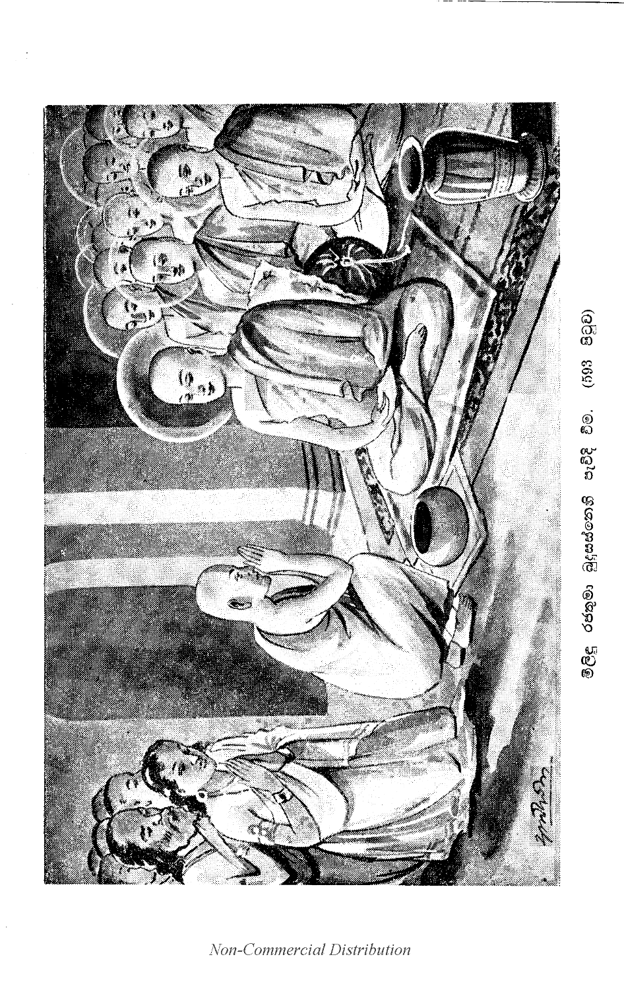

නිගමනය
(534) මේ සිංහල ප්රකරණයට නො පැමිණියා වූ ප්රශ්නයෝ දෙසාළිසෙකි. මේ ප්රකරණයෙහි පැවැත ආවා වූ ද, නො ආවා වූ ද සියලු ම ප්රශ්න එක් කළ කල තුන්සියසතරෙකි. ඒ සියලු ම ප්රශ්න මිලින්දප්රශ්නය කියා සංඛ්යාවට යෙති.
මෙසේ නරෙන්ද්ර-යතීන්ද්ර දෙදෙනාගේ ප්රශ්නපෘච්ඡාවිසර්ජනාවසානයෙහි ජලපොළොව අවසන් කොට දෙලක්ෂසතළිස්දහසක් ඝනකඩ ඇති මේ මහාපෘථිවිය ෂට්ප්රකාරයෙන් කම්පා වී ය. අහස විදුලි පැහැර ගියේ ය. සදෙව්ලොව දෙවියෝ දිවමල්වර්ෂා කළාහු ය. පසළොස් බඹලෝ බ්රහ්මයෝ සාධුකාර දුන්හ. මහාසමුද්රය මහාමෙඝගර්ජනාවක් මෙන් මහාඝොෂා කෙරෙමින් ගියේ ය. එකල ඒ ආශ්චර්ය දුටුවා වූ පන්සියයක් පමණ මගුල්මහඇමතියන් ඇතුළු වූ සාගල්පුර වාසීහු ද, අන්තඃපුරබිසෝවරු ද දොහොත් මුදුන් ගෙණ සාධුකාර දෙමින් නාගසෙන ස්ථවිරොත්තමයානන් වහන්සේගේ ශ්රී පාදද්වන්ද්වය වැඳ වැතිර ගියාහු ය. ඒ ආශ්චර්ය දැකීමෙන් අතිශයින් ප්රමුදිත වූ සිත් ඇත්තා වූ අතිශයින් සුමර්දිතමානසහිත සිත් ඇත්තා වූ සර්වඥශාසනයෙහි සාරත්වය දක්නා නුවණැත්තා වූ රත්නත්රයෙහි කිසි කාංක්ෂාවක් නැත්තා වූ කිසි දෘෂ්ටි අවුලක් නැත්තා වූ කිසි දැඩිකමක් නැත්තා වූ මිලිඳුමහරජානෝ බුද්ධ ශාසනයෙහි සිත සෘජු ව ගෙණ නාගසෙනස්ථවිරොත්තමයානන් වහන්සේගේ ගුණයෙහි ද, ඊර්යාපථයෙහි ද අතිප්රසන්න ව, විස්සත්ථ ව, රාජ්ය සැපතෙහි නිරාලය ව, පහ වූ මානදරථ ඇති ව, සිත නො සන්සුන්බව ය යි කියන ලද උද්ධච්චයෙන් එතෙර ව මෙසේ කීහ:- “සාධු, සාධු! ස්වාමීනි, නාගසෙනස්ථවිරොත්තමයානන් වහන්ස, සර්වඥවිෂය වූ බොහෝ ප්රශ්න නුඹ වහන්සේ විසින් විසඳන ලද්දේ ය. මේ ගෞතමසර්වඥශාසනයෙහි සද්ධර්මසෙනාධිපති වූ ශාරීපුත්රථෙර සාමීන් වහන්සේ හැර ප්රශ්න විසඳීමෙහි නුඹ වහන්සේ හා සදෘශ වූ අනික් සමර්ථ කෙනෙක් නැත. ස්වාමීනි, නාගසෙනස්ථවිරොත්තමයානන් වහන්ස, නුඹ වහන්සේ වෙහෙසා බොහෝ සේ ප්රශ්න විචාළෙමි. ඒ මාගේ වරද මට ක්ෂමා කර වදාළ මැනැව. ස්වාමීනි, මාගේ නාගසෙනස්ථවිරොත්තමයානෙනි, අද මෙතැන් පටන් මාගේ දිවිහිමියෙන් තුණුරුවන් සරණ ගියා වූ උපාසකයෙකැ යි කියා මා ධරා වදාළ මැනැවැ” යි කීහ.
මිලිඳුමහරජානෝ එකල පන්සියයක් අමාතයයන් හා සමග නැවැත නැවැතත් නාගසෙනස්ථවිරොත්තමයානන් ආශ්රය කොට වැඳ පුදා බොහෝ වස්තු වියදම් කරවා මිලිඳු නම් මහාවිහාරයක් කරවා නාගසෙනස්ථවිරයන් වහන්සේට පුදා නාගසෙනස්ථවිරයන් වහන්සේ ප්රධාන කොට ඇති සියක් කෝටියක් පමණ මහරහතන් වහන්සේට ප්රධාන කොට ඇති සියක් කෝටියක් පමණ මහරහතන් වහන්සේට සිවුපසයෙන් උපස්ථාන කළාහු ය. මෙසේ නාගසෙනස්ථවිරොත්තමයානන් වහන්සේ සර්වඥ විෂයානුකූල වූ ප්රශ්න ව්යාකරණයෙහි අතිප්රසන්න වූ මිලිඳුමහරජානෝ සිතන්නාහු ‘මාගේ තිලෝගුරු සර්වඥරාජොත්තමයානන් වහන්සේ ධරමාණකාලයෙහි එක ම ධර්මදෙශනාවක් ඇසුවා වූ පොක්ඛරසාතිය, රට්ඨපාල, ජොතිය, අනුරුද්ධාදි මහෝත්තමයෝ පෘථිවිය සමාන ධන සැපත් හැර මහණ ව සිල් පුරා සංසාරසාගරයෙන් එතෙර වූහ. ‘මම වූ කලී සුවාසුදහසක් ධර්මස්කන්ධය මාගේ ශ්රොත්රපථයෙන් ස්පර්ශ කෙරෙමින් බුද්ධශාසනයෙහි මහණ නො වීම් නම්, සසරින් කෙසේ එතෙර (535) වෙම් දැ?, යි සිතා තමාගේ වැඩිමහලු රාජකුමාරයාහට රාජ්යය පාවාදී අගාර සංඛ්යාත ගිහිගෙයින් නික්ම බුද්ධශාසනයෙහි පැවිදි ව කෘත්යාධිකාර ඇති බැවින් විදර්ශනා වඩා සිවුපිළිසිඹියාපත් රහත් වූසේකි. එයින් කීහ:-
“එවං විස්සජ්ජිතෙ පඤ්හෙ-නාගසෙනෙන ධීමතා,
පීතියා නච්චමානාව-වසුධා කම්පිත්ථ නෙකධා.
දෙවා සබ්බෙ ව බ්රහ්මානො-නාගා යක්ඛා ච මානුසා,
සාධුකාරං පවත්තෙසුං-තදා සන්තුට්ඨමානසා.
රාජා රජ්ජසිරිං දත්වා-රාජපුත්තස්ස අත්තනො,
සාසනෙ පබ්බඡිත්වාන-අරහත්තමපාපුණි” යි.[1]

මෙසේ ද්රැහිණොපෙන්ද්ර ඉන්ද්රාරි චන්ද්රශෙඛර ඵර්ණන්දාදී සමස්ත ලොකෙන්ද්ර වන්දිත පාදාරවින්දද්වන්දෙවාපශොභිතාර්හාත් සම්යක්සම්බුද්ධ සර්වඥ-රාජොත්තමයානන් වහන්සේ පන්සාළිස් අවුරුද්දක් මුළුල්ලෙහි බුද්ධරාජ්යශ්රී කෙරෙමින් සර්පසංවත්සරයෙහි වෙසක්මස පුරපසළොස්වක් ලත් අඟහරුවාදා අලුයම් වේලෙහි පිරිනිවන් පැ වදාල වු මූෂික වෘෂභ ව්යාඝ්ර ශශ නාග සර්ප අශ්ව අජ කපි කුක්කුට සොණ සූකරාඛ්ය ද්වාදශවිධ වූ සුගත්වර්ෂයෙන් දෙදාස්තුන්සියවිස්සට පැමිණි මෙම කපිසංවත්සරයෙහි ශ්රීදෙහයෙන් භාස්කරානුසාරි ව ස්වර්ණවර්ණබුදුරැස් විහිදෙන හෙයින් අංගීරස නම් වූ ලොවුතුරා බුදුන්ගේ ශාසනය මනා ව පිහිටියා වූ සොභන වූ කායගමන් ඇති ධරමාණ වූ සුගතොත්තමයානන් වහන්සේ ලංකාද්වීප වාසී වූ ගෘහස්ථප්රව්රජිත සකලජනයන් සඳහා වැඩි තුන්තරා ගමනින් සොභමාන වු මෙම ශ්රී ලංකාද්විපයෙහි නිත්ය බෘන්දාරකනිකරොත්සව ක්රීඩාප්රසෘතස්වර්ගකණ්ඩයක් මෙන් සකල සම්පත්තීන් බබලන මනොරම්ය වූ සෙංඛණ්ඩ නම් වූ පුරප්රවරයෙහි විජයභූපාල ප්රභෘති වූ ලක්දිව රජ කළ එක්සියසැටසත්රජතුමානන්ට ඉක්බිති ව රජ පැමිණි කීර්ති ශ්රී රාජසිංහ නම් ද්විපචක්රවර්තීහු ලොකශාසනද්වය තමන් දිවි මෙන් රක්ෂා කරති. එයින් කීහ:-
සම්බුද්ධරාජ පරිනිබ්බුත ද්වෙසහස්සෙ
තීතෙ සත්තතය පිචෙ පන වීසවස්සෙ,
රම්මෙ චරඞ්ගිරසසාසනසුප්පතිට්ඨෙ
ලංකාය සොගතසමාගතසොභමානෙ.
සෙඞ්ඛණ්ඩ නගරෙ රම්මෙ-සග්ගකණ්ඩංව භාසුරෙ,
කීත්තිස්සිරිරාජසීහෙ-පාලෙන්තෙ ලොකසාසනං” යි.[2]
තවද, සර්වඥශාසන නමැති නභස්තලයට පද්මබන්ධු වූ සූර්යදිව්ය රාජයා වැනි වූ ශාශ්වතොච්ඡෙදාද්යනෙකවාදීන් නමැති ගජෙන්ද්ර කුම්භස්ථල විදාරණය කොට ජයග්රහණයට කෙසරසිංහරාජයක්හු වැනි වූ නානාවිධ වෛරීසමූහ නමැති ඵණීන්ද්රග්රහණයට සුපර්ණරාජයක්හු වැනි වූ ප්රඥාගොචර වූ අනෙකශතසහස්රයතිනිකර පරිවෘත ධුතව්රතශීලාභරණ භූෂිත වූ වැලිවිට සරණංකර නම් සංඝරාජ ධුරන්ධරොත්තමයානන් වහන්සේ ජිනෙන්ද්රශාසනය සුද්ධ කෙරෙමින් බබළනසේක. එයින් කීහ-
“සම්බුද්ධ සාසන නභම්බුජ බන්ධු රාජා
වාදීගජින්ද ජිතකෙසර සීහරාජා
වෙරීසමූහ භූජගින්ද විභංගරාජා
රාජෙති ධීර සරණඞ්කර සඞ්ඝරාජා” යි.
(536) ඒ සංඝරාජොත්තමයානන්ගේ අතීශයාග්රශිෂ්ය වූ ගම්භීර වූ සමුද්රජලස්කන්ධය මෙන් ධරණ ලද ඡන්දස්ව්යාකරණාදි ශාස්ත්රරාශියක් ඇත්තා වූ අත්තරග්රාම වාසී වූ භණ්ඩාර රාජගුරු නාමද්වයයෙන් ප්රසිද්ධ වූ පණ්ඩිතොත්තමයාගේ අග්රශිෂ්ය වූ සුමංගල ස්ථවිර නමෙක් වී සද්ධර්ම නමැති සිංහතෛලධාරණයට හෙමහාජනයක් හා සදෘශ වූ රත්නත්රයෙහි ඇලුනා වූ පිටකත්රයෙහි දක්ෂ වූ ඡන්දස් නිරුක්ති ශාස්ත්රයෙහි පරතෙරට පැමිණියා වූ වජ්රොපම වූ තීක්ෂණ නුවණැති නිරන්තරයෙන් රාජානුශාසනා කරන්නා වූ සීනටිකුඹුරේ සුමංගල නම් යතීන්ද්රතෙම එකාන්තයෙන් ම මහාසාගරය මන්දරපර්වතයෙන් මථනය කරන්නාක් මෙන් ද. කැමැති පරිද්දෙන් ම ඝනතර සකල පෘථිවිතලය පෙරළන්නාක්හු මේ ද සර්වභාෂා මූලික වූ මාගධිකභාෂාවෙන් පූර්වාචාරීන් විසින් ප්රකරණාරූඪ කොට තබන ලද්දා වූ සර්ධර්මාමෘතරසයෙන් යුක්ත වූ ඝනතරපර්වත ප්රතිච්ඡන්න වස්තුවක් මෙන් දුර්දර්ශනීය සුන්දරතර ප්රීත ජනක අර්ථසමූහයක් ඇත්තා වූ අර්ථ ධර්ම ප්රසන්න ගම්භීරත්වයෙන් ගම්භීර වූ මිලින්දප්රශ්නය ම් වූ ප්රකරණය ඒ මාගධික නම් භාෂාවෙන් පෙරළා තමාගේ විශුද්ධබුද්ධිය කරණ කොට ගෙණ සමස්තජනකර්ණාමෘතරසායන වූ ග්රන්ථ විශෙෂ වූ මේ සද්ධර්මාදාස නම් වූ ප්රකරණය සිංහල දෙශභාෂාවෙන් කෙළේ යි. එයින් කීහ:-
“තස්සග්ගසිස්ස වර අත්තරගාම වාසී
භණ්ඩාර රාජගුරු නාම පසිද්ධමාසී,
ගම්භීර සින්ධුරිව ධාරිත සත්ථරාසි
තස්සග්ග සිස්සපි සුමඞ්ගලථෙරවාසි.
-
සද්ධම්මසීහ තෙලස්ස-හෙම භාජන සන්නිහො,
රතනත්තය ආසත්තො-පිටකත්තයපාටවො
-
ඡන්දො නිරුත්ති පාරන්ත-පත්තො වජිර බුද්ධිකො,
රාජානසාසකො නිච්චං-යො සො යති සුමඞ්ගලො.
-
මන්දාරගිරිනා සාමං-මථිතං විය සාගරං,
කාමංච පරිවත්තෙන්තො-සකලං ඝනමෙදිනිං.
-
ඨපිතං මූලහාසාය-ධම්මාභිරස සඤ්ඤැතං,
මිලින්දපඤ්හං ගම්භීරං-දුද්දසං අත්ථජාලිනං.
-
අකා සිහළභාසාය-විසෙසං සුද්ධබුද්ධියා,
සද්ධම්මාදාසකං එතං-සොතාමත රසායන”න්ති.[3]
සීනටිකුඹුරේ සුමංගල නම් තෙරහු කළ ශ්රී සද්ධර්මාදාසය නිමි.
සිද්ධිරසතු
ඉත්ථං මුනින්ද සද්ධම්මං-වණ්ණ වන්තෙන යං මයා
සම්භතං අනුමොදන්තු-පුඤ්ඤං දෙවා නරාසභා.